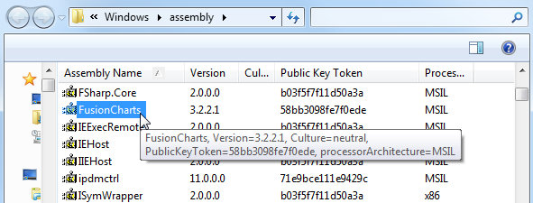
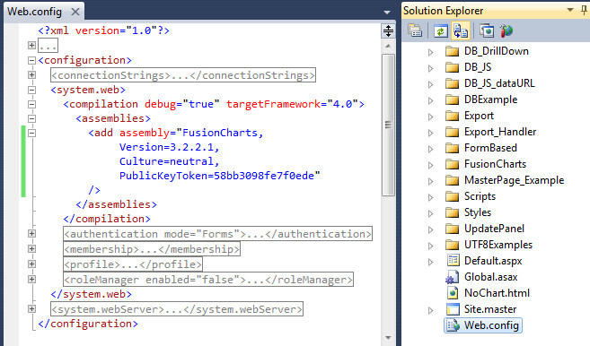
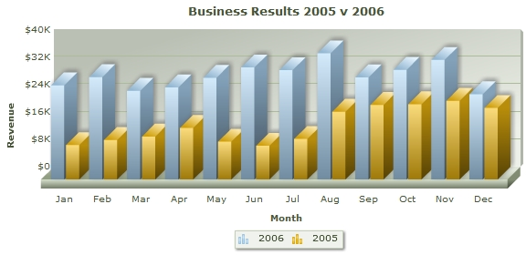
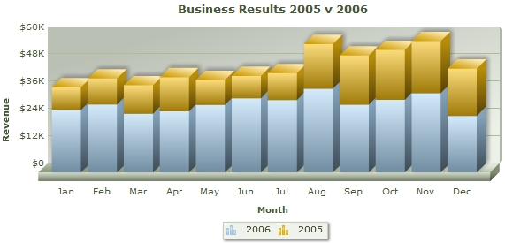
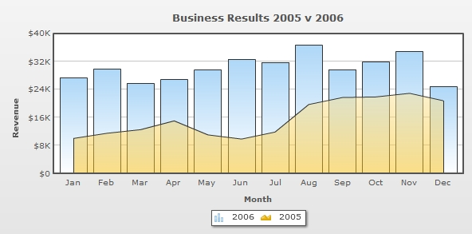
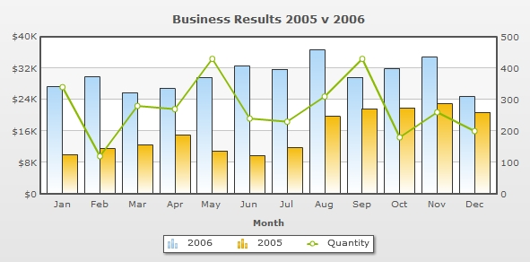

FusionCharts XT can effectively be used with Asp.Net(VB) to plot dynamic data-driven charts.
Even when used with VB.NET, FusionCharts XT internally uses JavaScript and XML/JSON to render the charts. The VB.NET code actually helps you output this JavaScript and XML/JSON. To aid your understanding of this section, we will recommend you to go through the following sections of documentation (if you have not already read them):
- Creating your first chart
- Changing chart type and size
- Configuring chart background, canvas, fonts, captions, data plot, labels, values, axis, legend, padding and margins, and number formatting
- Using XML or JSON as data source
- Using JavaScript API of FusionCharts
- Creating drill-down charts and LinkedCharts
- Exporting charts as images or CSV
- How FusionCharts XT work?
In this section, we will show a few basic examples to help you get started.
We will cover the following examples here:
- Using FusionCharts XT in ASP.NET(VB) with a pre-built Data.xml (which contains data to plot)
- Changing the above chart into a single-page-chart using Data String method
- Using HTML Embedding method to render the chart
- Creating pure JavaScript charts
- Using JSON data to create chart
- Creating multiple charts in a single page
- Creating transparent chart
- Setting managed printing for Mozilla browsers
- Creating chart with multiple sets of data
- Creating a stacked chart
- Creating a combination chart
- Creating a combination chart with multiple units
Let's quickly see each of them.
Before you go further with this page, we strictly recommend you to please go through the How FusionCharts XT works? and Creating Your First Chart sections, as we will discuss concepts explained in these sections.
All code discussed here is present in Download Package > Code > VB_NET > BasicExample folder.
In our code, we have used the charts and JavaScript class files contained in Download Package > Code > FusionCharts folder. When you run your samples, you need to make sure that the SWF files are in proper location.
Moreover, for ASP.NET you can use the ASP.NET Wrapper class, FusionCharts.dll (contained in Download Package > Code > VB_NET > Bin folder). Copy the file into the Bin folder of your Project. In case you are facing any issue with the DLL due to security issues in your server, you can choose to use the FusionCharts.vb file from Download Package > Code >VB_NET > src folder and keep it in APP_CODE folder.
We are now providing strongly named assembly (FusionCharts) that you can put it into your GAC (Global Assembly Cache). Once you have added FusionCharts in GAC, you can directly refer to the assembly in your project without including it in the Bin folder of the project. This steps below describe how to add FusionCharts.dll in GAC and use it in your project:
- Go to C:\Windows\Assembly folder and drag and drop FusionCharts.dll into this folder.

- Open your Project and type the following code under <compilation> section of web.config:
<assemblies> <add assembly="FusionCharts, Version=3.2.2.1, Culture=neutral, PublicKeyToken=58bb3098fe7f0ede"/> </assemblies>

Once done, you do not need to add a reference to FusionCharts.dll into your project. All you need to do is to use InfoSoftGlobal namespace (Import InfosoftGlobal).
NOTE: If you have multiple versions of FusionCharts.dll in the GAC, make sure to re-reference to the 3.2.2.1 version of FusionCharts.dll through your project properties or web.config.
Let's start building our first example. In this example, we will create a "Monthly Unit Sales" chart using Data Url method. For a start, we will hard code our XML data in a physical XML document Data.xml and then use it in our chart contained in an aspx page (SimpleChart.aspx). The chart will look like the image shown below:

Let's first have a look at the XML Data document:
<chart caption='Monthly Unit Sales' xAxisName='Month' yAxisName='Units' showValues='0' formatNumberScale='0' showBorder='1'> <set label='Jan' value='462' /> <set label='Feb' value='857' /> <set label='Mar' value='671' /> <set label='Apr' value='494' /> <set label='May' value='761' /> <set label='Jun' value='960' /> <set label='Jul' value='629' /> <set label='Aug' value='622' /> <set label='Sep' value='376' /> <set label='Oct' value='494' /> <set label='Nov' value='761' /> <set label='Dec' value='960' /> </chart>
This XML is stored as Data.xml in Data Folder under BasicExample folder. It basically contains the data to create a single series chart to show "Monthly Unit Sales". We will plot this on a Column 3D Chart. Let's see how to do that.
To plot a chart that consumes this data, you need to include the HTML+ JavaScript code to embed a chart object and then provide the requisite parameters. To make things simpler for you, we have put all this functionality in a method named as RenderChart(). This method is contained in FusionCharts.dll. So, whenever you need to work with FusionCharts XT in VB, just include this file in Bin folder of your project and then you can work with FusionCharts XT very easily.
Let's see it in example. SimpleChart.aspx contains the following code to render the chart:
<%@ Page Language="VB" AutoEventWireup="false" CodeFile="SimpleChart.aspx.vb" Inherits="SimpleChart" %>
<HTML>
<HEAD>
<SCRIPT type="text/javascript" src="../FusionCharts/FusionCharts.js"></SCRIPT>
<TITLE>FusionCharts XT - Simple Column 3D Chart </TITLE>
</HEAD>
<BODY>
<form id="Form1" method="post" runat="server">
<asp:Literal ID="Literal1" runat="server"></asp:Literal>
</form>
</BODY>
</HTML> In the above code, we are doing the following:
- Including the FusionCharts.js which will help us in creating a chart
- Placing a Literal control with id Literal1 in the Web Form
In the code-behind file, we do the following:
Imports InfoSoftGlobal
Partial Class SimpleChart
Inherits System.Web.UI.Page
Protected Sub Page_Load(ByVal sender As Object, ByVal e As System.EventArgs) Handles Me.Load
'This page demonstrates the ease of generating charts using FusionCharts.
'For this chart, we have used a pre-defined Data.xml (contained in /Data/ folder)
'Ideally, you will NOT use a physical data file. Instead you'll have
'your own ASP.NET scripts virtually relay the XML data document. Such examples are also present.
'For a head-start, we have kept this example very simple.
'Create the chart - Column 3D Chart with data from Data/Data.xml
Literal1.Text = FusionCharts.RenderChart("../FusionCharts/Column3D.swf", "Data/Data.xml", "", "myFirst", "600", "300", False, True)
End Sub
End Class As you can see above, we have:
- Included InfoSoftGlobal namespace provided in FusionCharts.dll which provides FusionCharts class (FusionCharts class provides static methods to create charts)
- Listened to the Page Load event using the Page_Load()method
- Invoked the RenderChart method which generates the chart HTML+JavaScript code as string
- Assigned the chart code as the content of the Literal control - Literal1 in the Web Form
To the RenderChart method, you can pass the following parameters (in same order):
| Parameter | Description |
| chartSWF | SWF File Name (and Path) of the chart which you intend to plot. Here, we are plotting a Column 3D chart. So, we have specified it as ../FusionCharts/Column3D.swf |
| dataUrl | If you intend to use the Data URL method for the chart, pass the URL as this parameter. Else, set it to "" (in case of Data String method). In this case, we are using Data.xml file, so we specify Data/Data.xml |
| dataStr | If you intend to use the Data String method for this chart, pass the XML/JSON Data String as this parameter. Else, set it to "" (in case of Data URL method). Since, in this above case, we are using Data URL method, we specify this parameter as "". |
| chartId | ID for the chart, using which it will be recognized in the HTML page. Each chart on the page needs to have a unique ID. To provide cross-browser compatibility, we recommend you not to start the ID with a numerical value, nor use space as part of the ID. |
| chartWidth | Intended width for the chart (in pixels or in percent), for example, "400" or "100%". |
| chartHeight | Intended height for the chart (in pixels or in percent), for example, "400" or "100%". |
| debugMode | Whether to start the chart in debug mode. Please see the Debugging your Charts section for more details on Debug Mode. |
| registerWithJS | Whether to register the chart with JavaScript. This option is deprecated and kept for backward compatibility reasons. The value set is always true. |
| allowTransparent | (optional) Whether the chart can be set to have a transparent background. This work together with the bgAlpha attribute of chart which needs to be set to a value lesser than 100. |
| scaleMode | (optional) Scaling option of the chart. It can take any value out of the four: "noscale", "exactfit", "noborder" and "showall". |
| bgColor | (optional) Background color of the chart container. If the background alpha of the chart is set to lower than 100 in chart data, this color will be visible and blend with the chart's background color. This color is fully visible when the chart messages are shown. Example, #ff0000 |
| language | (optional) Preferred language, for example, EN |
When you now run this page, you will see a chart like the one below drawn inside the Literal placed in the Web Form:
If you do not see a chart like the one below, please follow the steps listed in Debugging your Charts > Basic Troubleshooting section of this documentation.
| method | Parameter | What it does? |
| RenderChart() | see above | Returns a string containing HTML+JavaScript that renders a chart. |
| RenderChartHTML() | see above | Returns a string containing HTML that renders a chart. This method is deprecated. |
| SetDataFormat() | "xml" or "json" | Sets the data format for the data-source of the chart. The data-source is set through the dataStr or dataUrl parameter of RenderChart or RenderChartHTML. Default value is xml. When you set the value to json you need to pass JSON URL or JSON String through the dataUrl or dataStr parameter. You need to call this method each time before you call RenderChart or RenderChartHTML method. |
| SetRenderer() | "flash" or "javascript" | Sets the renderer-engine of FusionCharts. It can be flash (default value). When you set the value to javascript, you can force-set javascript renderer. You need to call this method each time before you call the RenderChart method. This setting is not applicable while using the RenderChartHTML method. |
| EnablePrintManager() | This method helps you enable the managed print feature of FusionCharts XT for Mozilla- browsers. It returns a <script> tag. You need to write the string in your page.You need to call this only once in a page.
Note: Print Manager works only in browsers that supports canvas object. |
|
| SetWindowMode() | "window" or "transparent" or "opaque" | Sets window mode of a chart. By default, chart renders in "opaque" mode. You can set to it the "window" mode, if required. You need to call this method each time before you call the RenderChart or RenderChartHTML method. |
So, you just saw how simple it is to create a chart using VB and FusionCharts XT. Let's now convert the above chart to use Data String method.
To convert this chart to use Data String method, we create another page dataXML.aspx in the same folder with following code:
<%@ Page Language="VB" AutoEventWireup="false" CodeFile="dataXML.aspx.vb" Inherits="dataXML" %>
<HTML>
<HEAD>
<SCRIPT type="text/javascript" src="../FusionCharts/FusionCharts.js"></SCRIPT>
</HEAD>
<BODY>
<form id='form1' name='form1' method='post' runat="server">
<asp:Literal ID="Literal1" runat="server"></asp:Literal>
</form>
</BODY>
</HTML> In the above code, like the previous example, include the FusionCharts.js and add a Literal control. The code behind is as follows:
Imports InfoSoftGlobal
Imports System.Text
Partial Class dataXML
Inherits System.Web.UI.Page
Protected Sub Page_Load(ByVal sender As Object, ByVal e As System.EventArgs) Handles Me.Load
'This page demonstrates the ease of generating charts using FusionCharts.
'For this chart, we have used a string variable to contain our entire XML data.
'Ideally, you will generate XML data documents at run-time, after interfacing with
'forms or databases etc.Such examples are also present.
'Here, we have kept this example very simple.
'Create an XML data document in a string variable
Dim xmlData As StringBuilder = New StringBuilder()
xmlData.Append("<chart caption='Monthly Unit Sales' xAxisName='Month' yAxisName='Units' showValues='0' formatNumberScale='0' showBorder='1'>")
xmlData.Append("<set label='Jan' value='462' />")
xmlData.Append("<set label='Feb' value='857' />")
xmlData.Append("<set label='Mar' value='671' />")
xmlData.Append("<set label='Apr' value='494' />")
xmlData.Append("<set label='May' value='761' />")
xmlData.Append("<set label='Jun' value='960' />")
xmlData.Append("<set label='Jul' value='629' />")
xmlData.Append("<set label='Aug' value='622' />")
xmlData.Append("<set label='Sep' value='376' />")
xmlData.Append("<set label='Oct' value='494' />")
xmlData.Append("<set label='Nov' value='761' />")
xmlData.Append("<set label='Dec' value='960' />")
xmlData.Append("</chart>")
'Create the chart - Column 3D Chart with data from xmlData variable using Data String method
Literal1.Text = FusionCharts.RenderChart("../FusionCharts/Column3D.swf", "", xmlData.ToString(), "myNext", "600", "300", False, False)
End Sub
End Class In the code above, we ahve:
- Created the XML data document in a StringBuilder object xmlData. Here, we are manually coding the data. In your applications, you can build this data dynamically after interacting with databases or external sources of data.
- Finally, created the chart using RenderChart method and set the dataStr parameter as xmlData. We leave the dataUrl parameter blank.
When you see this chart, you will get the same results as before.
You can also create charts using theHTML embedding method. It creates HTML <object>/<embed> tags to render chart. It does not require FusionCharts.js to be included in the page.
The HTML embedding method is deprecated. Many of the features of FusionCharts XT that works in collaboration with JavaScript, like providing JSON data, advanced event-handing, setting chart attribute, etc., will not work using this method.
Again, to make things simpler for you, we have provided a VB method called renderChartHTML() which helps you render chart using the <object>/<embed> tag and you do not have to get your hands dirty with HTML tags.
Let's now quickly put up a sample to show the use of this method. We make a copy of our SimpleChart.aspx (which rendered chart using Data Url method from the Data.xml file ) file and rename it to BasicChart.aspx. We load the data from our previously created Data.xml file. The modification involves a single line change from the previous file. The modification is required only in the code behind and the modified code (modification in bold) will look like the following :
Imports InfoSoftGlobal
Partial Class SimpleChart
Inherits System.Web.UI.Page
Protected Sub Page_Load(ByVal sender As Object, ByVal e As System.EventArgs) Handles Me.Load
Literal1.Text = FusionCharts.RenderChartHTML("../FusionCharts/Column3D.swf", "Data/Data.xml", "", "myFirst", "600", "300", False, True)
End Sub
End Class As you can see above, we have created the chart using the renderChartHTML() method.
The renderChartHTML() method takes in the same parameters as the renderChart()method.
The above example shows how you can load data using Data Url method. You can also use the Data String method to pass XML as string using the renderChartHTML() method.
FusionCharts XT allows you to create pure JavaScript-only charts that does not require Flash, hence enabling your chart in browsers where Flash is not supported like that of iPhone, iPad, etc. This is achieved by calling the SetRenderer method in Asp.Net(VB) before you render your chart. Using this method, you need to set the current chart renderer to javascript.
The code snippet below shows how you can achieve this:
FusionCharts.SetRenderer("javascript")
...
Literal1.Text = FusionCharts.RenderChart("../FusionCharts/Column2D.swf", "../BasicExample/Data/Data.xml", "", "chart1", "600", "300", False, True)
The above code will create pure-JavaScript FusionCharts as shown in the image below:

You can provide chart data in JSON format. You need to call the SetDataFormat method and set the data format to json through it. Once done, you can pass the JSON data through the RenderChart method. If you need to pass JSON data contained in a URL, use the dataUrl parameter. If you have JSON as string use the dataStr parameter. The code snippets below illustrates how you can do these:
' set chart data format to json
FusionCharts.SetDataFormat("json")
' Create the chart - Column 3D Chart with data from Data/Data.json
Literal1.Text = FusionCharts.RenderChart("../FusionCharts/Column3D.swf", "Data/Data.json", "", "chart1", "600", "300", False, True)
or
' set chart data format to json
FusionCharts.SetDataFormat("json")
' Create the chart - Column 3D Chart with data from strJSON variable using dataStr method
Literal2.Text = FusionCharts.RenderChart("../FusionCharts/Column3D.swf", "", strJSON.ToString(), "chart1", "600", "300", False, True)
FusionCharts XT needs JSON to be passed in a specific format. Please read FusionCharts XT Data Formats > JSON section for more on this.
Please note that JSON data format is not supported in RenderChartHTML method.
Creating multiple charts in a page is as easy as creating a single chart. The code below shows how you can call RenderChart method and create as many charts as you wish. All you need to take care is that you should render each chart in a separate Literal.Each chart should also have unique Id. Consider the code shown below:
' Create the chart - Column 3D Chart with data from Data/Data.xml
Literal1.Text = FusionCharts.RenderChart("../FusionCharts/Column3D.swf", "Data/Data.xml", "", "chart1", "600", "300", False, True)
' Now, create a Column 2D Chart
Literal2.Text = FusionCharts.RenderChart("../FusionCharts/Column2D.swf", "Data/Data.xml", "", "chart2", "600", "300", False, True)
' Now, create a Line 2D Chart
Literal3.Text = FusionCharts.RenderChart("../FusionCharts/Line.swf", "Data/Data.xml", "", "chart3", "600", "300", False, True)
You can create charts with transparent backgrounds. This makes the chart show to what lies below it in HTML. To do this you need to follow these steps:
- In the chart's XML data, set <chart ... bgAlpha='0,0' ..> or in chart JSON dataset bgAlpha : "0,0"
- In the RenderChart/RenderChartHTML method set allowTransparent parameter to true.
Below is a sample code with a chart having transparent background (TransparentChart.aspx) :
<%@ Page Language="VB" AutoEventWireup="false" CodeFile="TransparentChart.aspx.vb" Inherits="TransparentChart" %>
<HTML>
<HEAD>
<script type="text/javascript" src="../FusionCharts/FusionCharts.js"></script>
</HEAD>
<body>
<form id='form1' name='form1' method='post' runat="server">
<div style="padding:40px; background-color:#9d7fbd; border:1px solid #745C92; width: 600px;">
<asp:Literal ID="Literal1" runat="server"></asp:Literal>
</div>
</form>
</body>
</HTML>
In the above code, we have create a purple DIV (background-color:#9d7fbd ) inside which we will create the transparent chart. The code-behind, which renders the chart, contains the following code:
Imports InfoSoftGlobal
Imports System.Text
Partial Class TransparentChart
Inherits System.Web.UI.Page
Protected Sub Page_Load(ByVal sender As Object, ByVal e As System.EventArgs) Handles Me.Load
Dim xmlData As StringBuilder = New StringBuilder()
xmlData.Append("<chart bgAlpha='0,0' canvasBgAlpha='0' caption='Monthly Unit Sales' xAxisName='Month' yAxisName='Units'>")
xmlData.Append("<set label='Jan' value='462' />")
xmlData.Append("<set label='Feb' value='857' />")
xmlData.Append("<set label='Mar' value='671' />")
xmlData.Append("<set label='Apr' value='494' />")
xmlData.Append("<set label='May' value='761' />")
xmlData.Append("<set label='Jun' value='960' />")
xmlData.Append("<set label='Jul' value='629' />")
xmlData.Append("<set label='Aug' value='622' />")
xmlData.Append("<set label='Sep' value='376' />")
xmlData.Append("<set label='Oct' value='494' />")
xmlData.Append("<set label='Nov' value='761' />")
xmlData.Append("<set label='Dec' value='960' />")
xmlData.Append("</chart>")
' Create the chart - Column 3D Chart with data from strXML variable using dataStr method
Literal1.Text = FusionCharts.RenderChart("../FusionCharts/Column3D.swf", "", strXML.ToSrting(), "myNext", "600", "300", False, True, True)
End Sub
End Class
In the code above:
- We build a string XML (xmlData) for chart setting attributes bgAlpha='0,0' and canvasBgAlpha='0'
- We render the chart with allowTransparent parameter set to true and used the XML data created
- We rendered the chart in the Literal which is placed inside the purple DIV
The chart will look as shown below. The purple color of the DIV below the chart is visible through the body of the transparent chart.

FusionCharts XT provides better-print feature for all Mozilla, WebKit, and Gecko based browsers like Firefox, Safari, etc. To enable this feature in VB ,all you need to do is call the EnablePrintManager()method once in your page(preferably at the beginning or end). This will enable the print manager process print data from all the charts in a page and prepare the charts for better-quality printing. To read more on how print manager works please go through this.
Note: Print Manager works only in browsers that supports canvas object.
The code below shows how you need to enable print manager through VB:
Literal1.Text = FusionCharts.EnablePrintManager()
...
' render chart
Literal4.Text = FusionCharts.RenderChart("../FusionCharts/Column3D.swf", "Data/Data.xml", "", "chart1", "600", "300", False, True)
Listening to Print Manager status using JavaScript
Print Manager takes a bit of time to prepare all charts present in a page for print. You can listen to Print Manager's Ready State event using FusionCharts JavaScript class. Once the charts are ready, which can be tracked by listening to an event raised by the Print Manager, you can use browser's File → Print menu, JavaScript's native window.print() function or Print Manager's advanced function - managedPrint(). The JavaScript code below shows how you can listen to the event and prepare for print:
<html>
...
<body>
<script type="text/javascript"><!--
FusionCharts.addEventListener (
FusionChartsEvents.PrintReadyStateChange ,
function (identifier, parameter) {
if(parameter.ready){
alert("Chart is now ready for printing.");
document.getElementById('printButton').disabled = false;
}
});
// --></script>
<input type="button" onclick="FusionCharts.printManager.managedPrint()"
value="Managed Print" disabled="disabled" id="printButton" >
...
</body>
</html>
In the above code we ahve
- Added a JavaScript event-listener for the global event PrintReadyStateChange to the global JavaScript object - FusionCharts
- Added a "Managed Print" button which will call FusionCharts.printManager.managedPrint(). The button is disabled when loaded.
- When the event is fired, it provides the listener with event arguments. The parameters event argument contains a property ready. This returns true when the Print Manager is ready to print all charts in a page
- Hence, in this event we can show the information alert and also enable the button, which was disabled prior to this.
Now, if you try printing from File → Print menu or using a button or function that call window.print() function. You can also click "Managed Print" button to print the chart.
- Once a chart is rendered, it silently gathers all the image data of the present state of the chart
- It converts the image data into image using canvas HTML object
- It hides the canvas image below the chart
- When print is invoked, a parallel CSS based print media layout (using @media print ) is created
- In this print media layout the Flash chart is hidden and the canvas image is displayed
- This layout with the canvas image is sent to the printer for print
Unlike the single set of data which we have plotted in the above charts, you might want to compare data of multiple months. In that case, you will need to create multi-series charts. In the sample below we will learn how to create a multi-series chart having data for two years. The chart will look like the image shown below:

To create a multi-series chart, what you need to do are:
- Use a Multi-series chart SWF file and
- Provide data (XML/JSON) in proper FusionCharts Multi-series data format
Let's take a sample multi-series data with monthly sales figures of two years as shown below (saved as MSData.xml):
<chart caption='Business Results 2005 v 2006' xAxisName='Month' yAxisName='Revenue' showValues= '0'numberPrefix='$'>
<categories> <category label='Jan' /> <category label='Feb' /> <category label='Mar' /> <category label='Apr' /> <category label='May' /> <category label='Jun' /> <category label='Jul' /> <category label='Aug' /> <category label='Sep' /> <category label='Oct' /> <category label='Nov' /> <category label='Dec' /> </categories>
<dataset seriesName='2006'> <set value='27400' /> <set value='29800'/> <set value='25800' /> <set value='26800' /> <set value='29600' /> <set value='32600' /> <set value='31800' /> <set value='36700' /> <set value='29700' /> <set value='31900' /> <set value='34800' /> <set value='24800' /> </dataset>
<dataset seriesName='2005'> <set value='10000'/> <set value='11500'/> <set value='12500'/> <set value='15000'/> <set value='11000' /> <set value='9800' /> <set value='11800' /> <set value='19700' /> <set value='21700' /> <set value='21900' /> <set value='22900' /> <set value='20800' /> </dataset>
</chart>
{
"chart":{
"caption":"Business Results 2005 v 2006",
"xaxisname":"Month",
"yaxisname":"Revenue",
"showvalues":"0",
"numberprefix":"$"
},
"categories":[{
"category":[
{ "label":"Jan" },
{ "label":"Feb" },
{ "label":"Mar" },
{ "label":"Apr" },
{ "label":"May" },
{ "label":"Jun" },
{ "label":"Jul" },
{ "label":"Aug" },
{ "label":"Sep" },
{ "label":"Oct" },
{ "label":"Nov" },
{ "label":"Dec" }
]
}
],
"dataset":[{
"seriesname":"2006",
"data":[
{ "value":"27400" },
{ "value":"29800" },
{ "value":"25800" },
{ "value":"26800" },
{ "value":"29600" },
{ "value":"32600" },
{ "value":"31800" },
{ "value":"36700" },
{ "value":"29700" },
{ "value":"31900" },
{ "value":"34800" },
{ "value":"24800" }
]
},
{
"seriesname":"2005",
"data":[
{ "value":"10000" },
{ "value":"11500" },
{ "value":"12500" },
{ "value":"15000" },
{ "value":"11000" },
{ "value":"9800" },
{ "value":"11800" },
{ "value":"19700" },
{ "value":"21700" },
{ "value":"21900" },
{ "value":"22900" },
{ "value":"20800" }
]
}
]
}
Let's now render the chart with this above data.
Literal1.Text = FusionCharts.RenderChart("../FusionCharts/MSColumn3D.swf", "Data/MSData.xml", "", "myFirst", "600", "300", False, True)In the above code, we have done the following:
- Changed the chart SWF to MSColumn3D.swf
- Changed the data as MSData.xml
The generated chart will look like the following screen-shot:
Please note that you can also use JSON data instead of XML. To achieve this, you will just need to declare FusionCharts.SetDataFormat("json") and pass your data as JSON instead of XML as shown in Use JSON data to create chart section above.
You can also show the cumulative sales figures of each month in grouped column in stacked charts. It is very easy to create a Stacked chart once you are ready with a multi-series data as shown in the previous example. The stacked chart will render similar to the image shown below:

To render the above chart, you will only need to provide the same multi-series data as shown in the previous example and use a Stacked chart SWF file as shown in the code section below:
Literal1.Text = FusionCharts.RenderChart("../../FusionCharts/StackedColumn3D.swf", "Data/MSData.xml", "", "myFirst", "600", "300", False, True) You can wish to combine various chart types and display in a single canvas. You can achieve this by using a Combination chart.
To keep it simple, let's re-use the multi-series data we used in the previous example. We will render the data for 2006 as a Column chart and data for 2005 as Area chart. The desired chart will be similar to the image shown below:

To achieve this, we have done the following modifications:
changed chart SWF file to MSCombi2D.swf
Literal1.Text = FusionCharts.RenderChart( "../../FusionCharts/MSCombi2D.swf", "Data/CSYData.xml", "", "myFirst", "600", "300", False, True )
added renderAs='Area' in dataset for 2005
<dataset seriesName='2005' renderAs='Area' >
So far, we have been working with data having a single unit - revenue. However, it is also possible to combine a chart of another unit like Quantity using a Dual Y Axis chart.
Let's create a chart which shows total quantity sales in two years along with revenue of two years. The chart will look as follows:

To achieve this, we will need to use a Dual Y Axis chart SWF file. Additionally, we will also add another set of data containing the total quantity in XML or JSON. The data with revenue and total quantity data is as follows:
<chart caption='Business Results 2005 v 2006' xAxisName='Month' yAxisName='Revenue' showValues= '0'numberPrefix='$'>
<categories> <category label='Jan' /> <category label='Feb' /> <category label='Mar' /> <category label='Apr' /> <category label='May' /> <category label='Jun' /> <category label='Jul' /> <category label='Aug' /> <category label='Sep' /> <category label='Oct' /> <category label='Nov' /> <category label='Dec' /> </categories>
<dataset seriesName='2006'> <set value='27400' /> <set value='29800'/> <set value='25800' /> <set value='26800' /> <set value='29600' /> <set value='32600' /> <set value='31800' /> <set value='36700' /> <set value='29700' /> <set value='31900' /> <set value='34800' /> <set value='24800' /> </dataset>
<dataset seriesName='2005'> <set value='10000'/> <set value='11500'/> <set value='12500'/> <set value='15000'/> <set value='11000' /> <set value='9800' /> <set value='11800' /> <set value='19700' /> <set value='21700' /> <set value='21900' /> <set value='22900' /> <set value='20800' /> </dataset> <dataset seriesName='Quantity' parentYAxis='S'> <set value='340' /> <set value='120' /> <set value='280' /> <set value='270' /> <set value='430' /> <set value='240' /> <set value='230' /> <set value='310' /> <set value='430' /> <set value='180' /> <set value='260' /> <set value='200' /> </dataset> </chart>
{
"chart":{
"caption":"Business Results 2005 v 2006",
"xaxisname":"Month",
"yaxisname":"Revenue",
"showvalues":"0",
"numberprefix":"$"
},
"categories":[{
"category":[
{ "label":"Jan" },
{ "label":"Feb" },
{ "label":"Mar" },
{ "label":"Apr" },
{ "label":"May" },
{ "label":"Jun" },
{ "label":"Jul" },
{ "label":"Aug" },
{ "label":"Sep" },
{ "label":"Oct" },
{ "label":"Nov" },
{ "label":"Dec" }
]
}
],
"dataset":[{
"seriesname":"2006",
"data":[
{ "value":"27400" },
{ "value":"29800" },
{ "value":"25800" },
{ "value":"26800" },
{ "value":"29600" },
{ "value":"32600" },
{ "value":"31800" },
{ "value":"36700" },
{ "value":"29700" },
{ "value":"31900" },
{ "value":"34800" },
{ "value":"24800" }
]
},
{
"seriesname":"2005",
"data":[
{ "value":"10000" },
{ "value":"11500" },
{ "value":"12500" },
{ "value":"15000" },
{ "value":"11000" },
{ "value":"9800" },
{ "value":"11800" },
{ "value":"19700" },
{ "value":"21700" },
{ "value":"21900" },
{ "value":"22900" },
{ "value":"20800" }
]
},
{
"seriesname":"Quantity","parentyaxis":"S",
"data":[
{ "value":"340" },
{ "value":"120" },
{ "value":"280" },
{ "value":"270" },
{ "value":"430" },
{ "value":"240" },
{ "value":"230" },
{ "value":"310" },
{ "value":"430" },
{ "value":"180" },
{ "value":"260" },
{ "value":"200" }
]
}
]
}
The above data is derived from the multi-series example. We have done the following changes in this data (saved as CDYData.xml) :
- We added a dataset with "Quantity" as seriesName
- We set this dataset to render on the Secondary Y Axis using the parentYAxis attribute
The parentYAxis attribute allows you to set the parent axis of the dataset. The required value can be either P (primary axis) or S (secondary axis). Primary datasets are drawn against the left y-axis and the secondary against the right y-axis. For more details please go through FusionCharts XT Data Format > XML > Combination Chart page.
The SWF file used to render this chart is MSCombiDY2D.swf and the HTML code used is as follows:
Literal1.Text = FusionCharts.RenderChart( "../../FusionCharts/MSCombiDY2D.swf", "Data/CDYData.xml", "", "myFirst", 600, 300, False, True )
FusionCharts XT pack offers advanced chart types like Scatter, Bubble, Multi-series Stacked, Pareto, Marimekko, etc. which can be also created using the same method described above. All you will need to do is to follow the XML format of the required chart type and use the proper SWF name of that chart type while rendering the chart. The following list provides links to the XML API pages of all the advanced chart types: